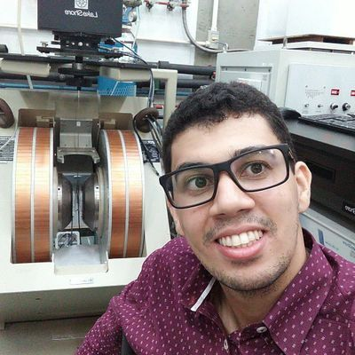

Minha carreira
acadêmica
The saddest aspect of life right now is that gathers knowledge faster than society gathers wisdom
-Isaac Asimov
Em minha carreira acadêmica tive a oportunidade de estudar diversos ramos da física da matéria condensada, proporcionando-me conhecimento sobre diversas técnicas de caracterização e formas distintas de abordar um problema científico.
Nesta jornada participei de diversos encontros científicos nacionais e internacionais, uma importante forma de fazer contatos e conhecer o trabalho dos colegas de outras localides. clique aqui e acesse meu currículo lattes para saber mais informações.
Técnicas de caracterização
- Difração de raios X (DRX)
- Espectroscopia RAMAN
- Reflectometria de raios X (RRX)
- Caracterização magnética (VSM) e (SQUID)
- Deposição de filmes finos (magnetron sputtering)
- Caracterização elétrica
Graduação em Física Médica (2009-2012)
Iniciei minha graduação em física médica no ano de 2019, tendo concluído o curso com distinção no fim de 2012. participei de projetos de iniciação científica em diferentes áreas: Desenvolvimento de revestimento inteligente com traçabilidade ótica, com baixa fricção e com baixa molhabilidade para uso com óleos parafinicos e asfaltênicos e com CO2, análise estatística de radiografias, síntese e caracterização de heaferritas. Durante a graduação me voltei ao estudo da física de materiais, ramo que segui durante minha pós-graduação.
Mestrado em Física (2013-2015)
Em 2013 dei início ao meu mestrado em física pela Univesidade Federal de Sergipe (UFS) sob a orientação do prof. Dr. Marcelo Andrade Macêdo, meu trabalho de mestrado versava sobre síntese, caracterização estrutural e magnética de uma hexaferrita do tipo Z. Na oportunidade, o objetivo principal focou na análise do acoplamento spin-fônon presente neste material através da conjugação de análises de Especroscopia RAMAN e caracterização magnética. Publicações que são frutos desse estudo:
Doutorado em Física (2015-2019)
Em meu doutorado me dediquei a síntese e caracterização de filmes finos voltados a apliacação como dispositivos memresistores (memristors). os memristors compreendem uma nova classe de elementos passivos do circuito elétrico, embora citados no trabalho seminal de Leon Chua, em meados dos anos 1970, permaneceram sem atenção da comunidade científica até serem resgatados por S. Willians, o primeiro a produzir um memristor físico. Nessa linha de pesquisa obtive eperiência com técnicas de caracterização e produção de filmes finos. São frutos desse estudo:
A novel structure ZnO-Fe-ZnO thin film memristor
Al2O3 thin film multilayer structure for application in RRAM devices